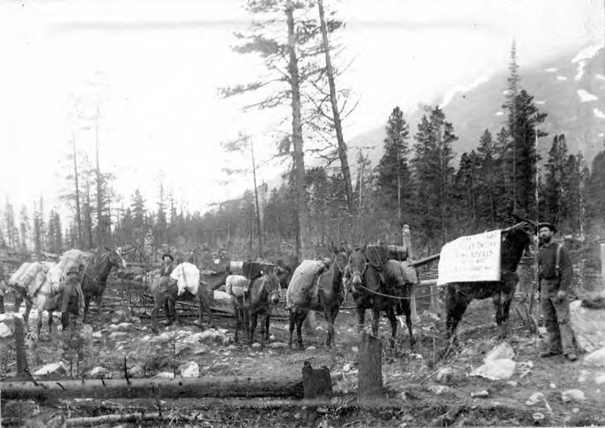

Chapter 16
The King of Skagway
In 1898, at the summit of the Chilkoot Pass, where the wind cut between the cairn posts that marked the boundary, a constable of the North-West Mounted Police stood beside a tripod scale and checked a man’s outfit against a manifest. The stampeders had come up from Sheep Camp in stages, caching loads along the way, and now they presented themselves to be weighed. The constable counted sacks of flour, sides of bacon, coils of rope, picks and pans.
The rule was the rule: a year’s supply, no less, measured to the pound. A man who fell short went back down. A man who met the mark passed into Canada, where the paper trail began—a record of his name, the weight of his goods, and his right to proceed.
The system was austere, bureaucratic, and designed to keep people alive. It assumed that the passage from American soil to Canadian soil was a passage from disorder to order, from chance to rule.
A few days later and forty miles south, on the wharf at Skagway, a man stepped off a steamer with a poke of dust in his pocket and a letter of introduction from a merchant in Seattle. The wharf was crowded. A stranger came forward, smiling, and offered to carry his pack. The stranger knew a good hotel. He knew where the freight rates were fair. He knew a man who could get a message through to Dawson. Within an hour, the newcomer’s dust was gone—lost in a poker game with newfound friends, or paid for freight that would never ship, or wired in a telegram that could not be sent. No manifest was checked. No constable stood watch. No paper trail existed. The passage from the steamer’s gangplank to the town’s muddy street was a passage from hope to prey.
The contrast was not accidental. It was structural. The North-West Mounted Police had built their system at the border, at the top of the pass, where the geography funneled every traveler through a single, checkable point. But south of the border, in the chaotic boomtown of Skagway, Alaska, no comparable authority existed. The United States had a marshal, a deputy or two, and a customs collector. Against a town swelling to between fifteen thousand and twenty thousand people by the summer of 1898, these officials were window dressing. Skagway was the largest city in Alaska, and it had no police force, no municipal government, no court closer than Juneau, and no telegraph connection to the outside world. It was the place where the stampede’s volume and desperation met the complete absence of institutional restraint. The result was not random crime. The result was a business.
The man who built that business was Jefferson Randolph Smith II, known from Texas to Colorado to Alaska as “Soapy.” He had earned the name in the cattle camps and mining towns of the West, where his signature trick was to stand on a corner, wrap a bar of soap in paper, slip a fifty-dollar bill or a hundred-dollar bill inside one of the wrappers, and then sell the wrapped bars for a dollar each to a crowd. An accomplice in the crowd would buy the first bar, unwrap it, and hold up the money. The crowd surged forward. The bars with money in them were pulled from the pile by confederates. The rest were soap. The trick was simple, repeatable, and scalable.
By the time Smith arrived in Skagway, shortly after the Portland brought the first gold to Seattle in July 1897, he had graduated from soap bars to something far more ambitious. He intended to run the town.
Skagway in the summer of 1898 was a bottleneck. Every stampeder heading for the Klondike by way of the Chilkoot or White Pass came through it. The town sat at the head of a long inlet, a narrow strip of flat ground between the mountains and the sea, and every steamer from Seattle, Vancouver, or San Francisco discharged its cargo of people and supplies onto its wharves. The volume was staggering. Tens of thousands of people passed through in the peak months, each carrying cash, each carrying hope, each carrying the belief that the next stage of the journey was manageable if only they could find the right information, the right freight handler, the right trail guide. The town existed to service that belief. And the man who controlled the town’s information, its freight, and its entertainment controlled the flow of money.
Smith’s system was comprehensive. He controlled the wharves through a network of porters—men who met every steamer, offered to carry packs, and steered newcomers toward Smith’s establishments. He controlled the telegraph office, where operators accepted fees for sending messages that could not be sent, because no telegraph line connected Skagway to anything until 1901. Unknowing prospectors sent news to their families back home, paid for the service, and walked away believing their messages had been delivered. The telegraph office also served as an intelligence operation. When a man sent a “telegram” mentioning that he had funds, or that he was carrying dust, the information passed to Smith’s network. The man would soon find himself befriended. A poker game would follow. The stakes would be friendly at first. Then they would not be.
Smith controlled a fake information bureau, where newcomers were directed for advice about trails, weather, and freight rates. The bureau dispensed guidance that funneled business to Smith’s allies and away from honest competitors. He controlled a private militia, the Skaguay Military Company, which gave his men a uniform, a pretense of authority, and the ability to intimidate. He controlled the town newspaper, which meant that complaints against him went unprinted and that his version of events was the version that circulated. He opened a saloon called Jeff Smith’s Parlor in March 1898, which served as his headquarters, his gaming house, and his court. The saloon was open day and night. It was the center of Skagway the way the Mounted Police post at the summit was the center of the pass: the point through which things flowed and were shaped.
The structure was not chaotic. It was organized. Smith’s men had territories and assignments. Some worked the wharves, meeting steamers and sizing up passengers as they came down the gangplank. Others operated the telegraph desk, collecting fees and intelligence in equal measure. Still others worked the trails, offering to guide newcomers over the pass and then robbing them at the first opportunity.
Inside the saloons, dealers worked from marked decks and stacked games. The operation mirrored the mining economy it fed upon. Just as a claim on Eldorado Creek had a boundary, an owner, and a system of extraction, so did Smith’s territory in Skagway. He staked his claim on the streets, the wharves, and the flow of newcomers. He worked his ground. He did not dig. He did not need to.
The gold came to him, carried by men who had already done the digging or who were on their way to do it. His was a mining operation that dispensed with the dirt.
The affidavits of victims, filed later with the U.S. Marshal’s office and reproduced in newspaper exposés, tell the scale of the losses. Men lost fifty dollars, a hundred, five hundred, a thousand. They lost outfits they had spent months assembling. They lost dust they had spent years saving. A farmer from Oregon lost eight hundred dollars in a poker game he believed was friendly. A schoolteacher from Michigan lost her passage money to a fake freight operator who had no boat. A miner returning from Dawson with a year’s worth of earnings lost it all in a single night at Jeff Smith’s Parlor. The losses were individually devastating. Collectively, they constituted a transfer of wealth as systematic as any royalty or tax. The difference was that this transfer operated without legal sanction, without public record, and without recourse.
The victims filed complaints. The complaints went to the office of the United States Marshal at Juneau, four hundred miles away by water. The marshal had a handful of deputies for a district that covered all of Alaska. Investigation was impossible. Prosecution was impossible. The marshal could not come. The correspondence between the marshal’s office and the frustrated citizens of Skagway reads as a record of institutional helplessness. Businessmen wrote letters describing the strangulation of honest trade.
Merchants reported that customers were being diverted, intimidated, and robbed. They reported that Smith’s men were operating in the open, that the town had no police, and that the military company was a private army in the service of a criminal. The marshal acknowledged the letters. He wrote back. He said he was aware of the situation. He said he lacked the resources to act. The letters crossed in the mail, and the situation continued.
The contrast with the Canadian side of the pass was exact and damning. At the summit, Sam Steele’s Mounted Police had created a system that was austere but fair. A man who carried his ton of goods was allowed through. A man who did not was turned back. The rule was hard, but it was a rule, and it applied to everyone. The police recorded names, checked manifests, maintained order, and prevented the deaths that would have resulted from unregulated passage into a wilderness where a man without supplies would starve. The system was not generous. It was not kind. But it was legible. A man could understand it. A man could comply with it. And having complied, a man could pass.
South of the border, the rule was different. A man stepping off a steamer at Skagway was a mark. His money belonged to whoever could take it. No recourse existed, no record was kept, and no authority would help him. The unclaimed ground of Skagway’s streets and wharves was the space where the Mounted Police’s jurisdiction ended and a different law began. That law was Soapy Smith’s. It had its own jurisdiction, its own enforcement, its own economy. It was not a failure of government. It was the absence of government, filled by a man who understood that absence was an asset.
The newspapers that had encouraged the stampede now began to report on its costs. The Skagway News, when it was not under Smith’s control, and papers in Seattle, San Francisco, and Juneau printed the affidavits of victims. They described the rigged games, the fake telegraph office, the porters who steered newcomers into traps. They named Smith. They named his associates. They described the Skaguay Military Company as a private army. The reporting was accurate, and it changed nothing. Smith’s power did not depend on secrecy. It depended on the absence of any force capable of acting on what was known. The newspapers could print the facts. The marshal could read them. The citizens could gather and pass resolutions. Smith’s saloon stayed open.
The economic logic of Smith’s operation was the logic of the stampede itself. The gold rush was, at its core, a system of moving large numbers of people with resources through a difficult geography toward a goal that most of them would not reach. The merchants who sold outfits, the steamship companies that sold tickets, the traders who sold supplies at inflated prices along the trails—all of them participated in this system of extraction. Most of them operated within the law. Smith operated outside it, but the principle was the same: the flow of people was the flow of money, and whoever controlled a point in the flow could take a cut. Smith’s cut was larger because his methods were unconstrained. He did not charge a markup. He took everything.
The men who passed through Skagway on their way to the Klondike were, in a sense, the same men who stood in line at the Chilkoot summit waiting to be weighed. They carried the same supplies, the same hopes, the same cash. The difference was that at the summit, a constable checked their goods against a manifest and recorded their passage. In Skagway, a porter checked their pockets and recorded their vulnerability. The two systems were mirror images. One was designed to keep people alive by ensuring they had enough. The other was designed to take what they had by ensuring they trusted the wrong person. The border between them was not a line on a map. It was the line between a world where rules applied and a world where they did not.
Smith’s operation was parasitic, but it was also, in its way, functional. Skagway worked, after a fashion. Freight moved, if at inflated rates. People found lodging, if at extortionate prices. Games were played, if the house always won. The town functioned as a machine for separating stampeders from their money, and Smith was the machine’s chief engineer. The honest businessmen of Skagway—the merchants, the restaurateurs, the hoteliers who were not part of Smith’s network—suffered. Their customers were robbed. Their reputations were tarnished. Their trade was diverted. They wrote letters to the marshal. They held meetings. They passed resolutions. They organized a citizens’ committee, the “Law and Order Society,” or what some called the “Committee of 101.” They demanded that Smith leave. They demanded that the military company disband. They were told, in various ways, that they were welcome to try to make him.
Smith’s response to the citizens’ committee was characteristic. He did not deny the accusations. He did not retreat. He offered to help. He proposed that his military company serve as the town’s police force. He offered to mediate disputes. He offered to donate to civic causes. He positioned himself not as a criminal but as a civic leader, a man who could provide the order that the federal government had not. The offer was a trap. Accepting it would have meant legitimizing his control, formalizing his authority, and giving his men the power of law. The citizens’ committee understood this. They refused. But they had no force to back their refusal. They had resolutions. Smith had guns.
The summer of 1898 was the peak. The flow of stampeders through Skagway was at its highest. The town was swollen, chaotic, and rich. Smith’s operation was at full capacity. Every steamer brought fresh marks. Every mark lost money. Every loss fed the machine. The telegraph office collected fees for messages that could not be sent. The wharf porters steered newcomers into rigged games. The fake information bureau directed business to Smith’s allies. The saloon served as the collection point, the courtroom, and the treasury. The system was complete. It was, in its own way, as systematic as the Mounted Police operation at the summit. The difference was that the Mounted Police system was designed to ensure survival. Smith’s system was designed to ensure loss.
The affidavits piled up. The newspaper exposés multiplied. The citizens’ committee grew more desperate. The marshal’s office remained unable to act. The territory of Alaska had no civil government, no legislature, no municipal code. The federal officials who existed were too few and too far away. The military had no jurisdiction over civilians. The Canadian Mounted Police had no authority south of the border. Smith operated in a gap in the law, and the gap was wide enough to contain a town.
The gap was also the stampede’s central irony. The gold rush had been made possible by institutions. The Mounted Police had made the pass survivable. The Canadian government had enforced the ton-of-goods rule, the mining regulations, the claim-recording system. The steamship companies had run scheduled service. The merchants had assembled and sold standard outfits. The entire operation, from Seattle to Dawson, was a logistical system that depended on rules, records, and enforcement. And at the point where that system began—at the port where every stampeder first set foot in Alaska—the system did not exist. The first step off the boat was a step into a void. The void had a king.
Smith was that king. His reign was not a failure of the stampede’s logic. It was the stampede’s logic, inverted. The same flow of people that made the steamship companies rich, that made the merchants of Seattle and Vancouver prosperous, that made the Mounted Police’s system of regulation necessary, made Smith’s system of fraud possible. He did not need to create victims. The stampede created them. It delivered thousands of people, each carrying cash, each trusting, each desperate for information and guidance, to a place where no authority existed. He simply stood at the point of delivery and took his cut. His cut was everything.
The honest men of Skagway understood the nature of the problem. Smith was not an aberration but the consequence of a system built on one side of the border and not the other. The town’s lawlessness was a failure of structure, not character. Resolutions and letters would not fill the gap. Only force would do. And the force would have to come from them, because no one else was coming.
The telegraph lines did not reach Skagway. The marshal sat in Juneau. The Mounted Police stood at the summit, forty miles and a border away. The steamer tied up at the wharf and discharged its passengers. The porters moved forward. The saloon doors stood open. The facade of Jeff Smith’s Parlor faced the waterfront, and the light from inside fell across the mud, and another boatload of men came down the gangplank into the town where the rules ended and a different arithmetic began.
